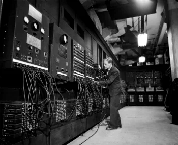
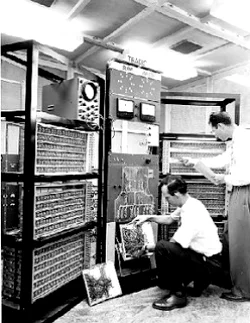
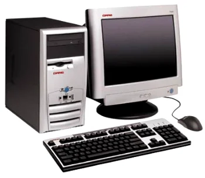

A verdadeira origem da Internet é com a ARPANet (Rede de Agencias de Projetos de Pesquisa Avançada ou Rede da Agência de Projetos de Pesquisa Avançada dos Estados Unidos). No ano de seu nascimento, em 1969, quando nasceu a ARPANET, surgiu a primeira conexão entre os computadores da Stanford e da UCLA.
Dois anos depois, o primeiro e-mail foi enviado por Ray Tomlinson. Naquele ano, também aparece o primeiro vírus Creeper. No início dos anos 70, nasceu a palavra Internet, que era aplicada ao sistema de redes interconectadas por meio dos protocolos TCP e IP (Transmission Control Protocol / Internet Protocol) nos quais eles baseavam serviços de Internet e e-mails.
Isso tudo até 1990, quando Tim Berners-Lee, conhecido como o pai da web, cria a linguagem HTML. A equipe do cientista criou o primeiro cliente web “WorldWideWeb” (www).
Os computadores de primeira geração funcionavam por meio de circuitos e válvulas eletrônicas. Possuíam o uso restrito, além de serem imensos e consumirem muita energia.

Ainda com dimensões muito grandes, os computadores da segunda geração funcionavam por meio de transistores, os quais substituíram as válvulas que eram maiores e mais lentas. Nesse período já começam a se espalhar o uso comercial.
Os computadores da terceira geração funcionavam por circuitos integrados. Esses substituíram os transistores e já apresentavam uma dimensão menor e maior capacidade de processamento.

Com o desenvolvimento da tecnologia da informação, os computadores diminuem de tamanho, aumentam a velocidade e capacidade de processamento de dados. São incluídos os microprocessadores com gasto cada vez menor de energia. Nesse período, mais precisamente a partir da década de 90, há uma grande expansão dos computadores pessoais.
HTML não é uma linguagem de programação; é uma linguagem de marcação , usada para definir a estrutura do seu conteúdo. HTML consiste de uma série de elementos, que você usa para delimitar ou agrupar diferentes partes do conteúdo para que ele apareça ou atue de determinada maneira. As tags anexas podem transformar uma palavra ou imagem num hiperlink, pode colocar palavras em itálico, pode aumentar ou diminuir a fonte e assim por diante.